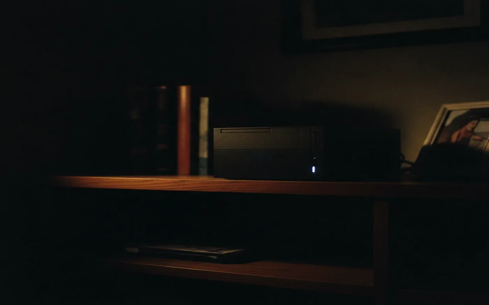
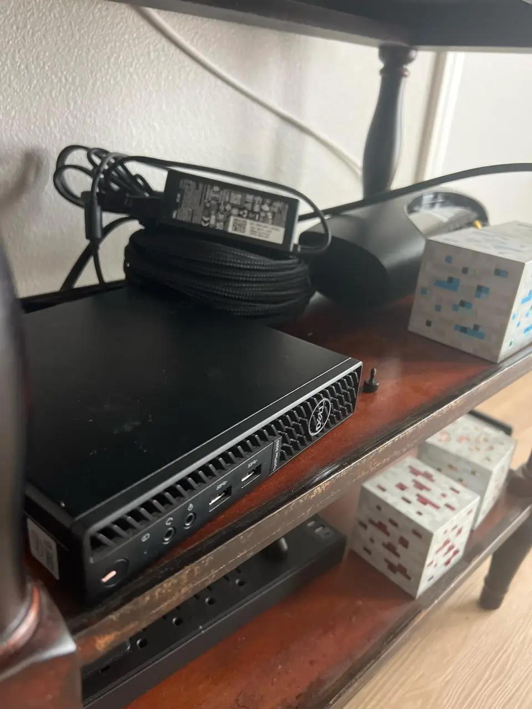

From the internet, this house has no open ports at all.
One small computer, a hypervisor, one virtual machine, three services. It answers from another state and it answers to nobody else, because reaching it is a property of the network rather than of a password.
Six times it stopped. Every one was a seam.
The usual answer is to forward a port, which publishes a service to everyone and leaves its login as the only thing in the way. Nothing here is forwarded. The two positions below are the whole security model.
Each of these has the same shape. Two layers, both of them healthy, and the join between them doing something neither one reports. The numbers are the marks on the drawing.
between the host processor and the one the guest was shown
llama.cpp wants AVX2. The i5 underneath has it. Proxmox hands a guest a generic processor model by default, and that one does not.
Setting it to pass the real chip through changed nothing, which was the useful part. Rebooting inside the guest keeps the same qemu process alive, and the emulated hardware is fixed when that process starts. It needed stopping and starting from the hypervisor.
qm set 100 --cpu host qm shutdown 100 && qm start 100 not reboot
Restarting the operating system and restarting the machine are different operations, and anything about emulated hardware needs the second one.
between a hypervisor that came back and a guest that did not
A power cut took the house out. Proxmox restored itself and looked completely fine, which it was. Docker stayed unreachable for a fortnight.
The virtual machine had no autostart flag, so the hypervisor booted and left it switched off. Nothing was broken. Nothing owned starting the layer above.
A healthy hypervisor tells you nothing about whether the things on it are running. Test recovery by actually cutting the power, not by reasoning about it.
Still open: the machine has no management controller, so the firmware setting that powers it on after an outage has to be changed at the machine. Until then, every power cut needs someone in the room.
inside the guest, with nothing left to talk to it
Fixing the last one meant logging into a machine whose password was gone, with no key installed and no guest agent running.
A hypervisor can open a guest's disk while the guest is off and write a key into it.
qm stop 100 LIBGUESTFS_BACKEND=direct virt-customize -a /dev/pve/vm-100-disk-0 \ --ssh-inject user:file:id_ed25519.pub qm start 100
On hardware with no management controller, which is most hardware in a house, the hypervisor is the out of band path. Worth knowing in advance, because you cannot look it up from inside the machine you are locked out of.
between the disk with the space and the disk being written to
A throwaway container grew to 5.47 GB and took the root filesystem to full. Builds inside it began failing with errors about anything except disk.
Docker writes to the 30 GB root, not the large volume mounted beside it. With the model, a notebook image and the video service already there, that disk runs near 85 percent when nothing is wrong.
Space existing on a machine is not the same as space available to the thing that needs it.
Still open: the container runtime has not been moved to the large volume, so this one is waiting to happen again.
at the boundary, in the policy rather than the machine
Remote access stopped. The server was listening, the firewall was off, the rules accepted everything. The mesh daemon had the answer in its own log.
Drop: TCP{laptop > pve:22} no rules matched
Tailscale takes two policy syntaxes, an older one and a current one, and a file is one or the other. In the current syntax a destination is a host and ports live in their own field. In the old one they are written together. Mixing the two shapes produces a policy that matches nothing and says so quietly.
When a connection dies and both ends look healthy, something between them is making a decision. Find its log before touching either end.
at the far end, in the client nobody suspected
Every port on every host timed out, on the mesh and on the local network alike, while ping kept replying. That pattern is a packet filter, not a route and not a service.
It was the laptop's own vpn, defending itself in four layers. Local network access silently stopped applying after the relay changed. Lockdown kept blocking after disconnecting. Split tunnelling had ssh excluded, which drops ssh specifically when the tunnel is down while ping carries on and keeps you looking in the wrong place. Filters from the driver outlived all three and only cleared when the client was fully quit.
The client sat at the far end of every failed connection and was checked last. Start with what changed, not with what is interesting.
